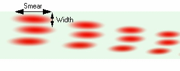
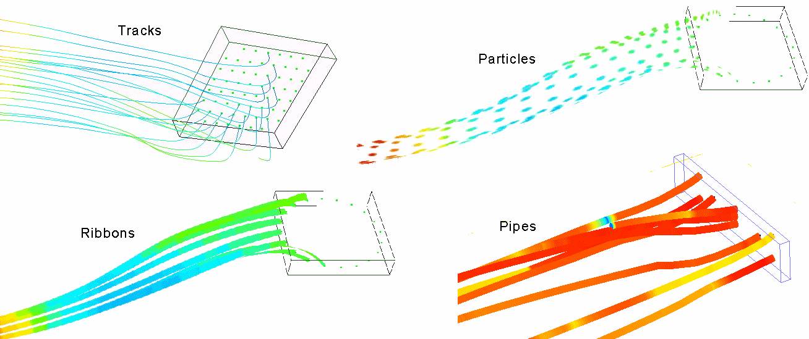

Use particles
to plot flow through fluids.
Procedure
- Optionally, select the object
or objects from where you want particles to be sourced.
If you select nothing, then the particles sources will
be located in the center of the root assembly.
- Click the Create Particles icon
() or right-click the
Particles node of the Results tree and choose Create
Particles.
- In the
property sheet, optionally select a different Source Plane Orientation
from the default.
- To move
the particle source, select a Manipulator Type other than None (the
default):
The Translation manipulator is a set of
axial arrows. To move the sources along an axis, select Translation,
then drag an arrow.
The Scale manipulator is a set of four
white corner handles on the bounding box of the selected source.
The handles are not visible when viewing along an axis. To resize
the source shape, select Scale, then drag the handles.
- To relocate
the particle sources to a different object or objects, then select
the object or objects and click Update.
The selected geometry is listed in the read-only text
field next to the Update button.
Results
A Particle Source is added to the
Particles node of the Results tree. The first particle source is named
Particle Source. Subsequent plots are named Particle Source n.
To copy or delete a particle source, right click on the particle
source in the Results tree and choose Copy or Delete.
For each object that was selected, sources are located at the
center of the bounding box of the object. The plane over which the
sources are distributed is the same as that of a plane plot created
using the same selection.
If you move an object associated with particle sources, then
the sources will move.
There are two types of particle streaming:
Velocity vector flows can be
used to visualize fluid motion.
Heat Flux vector flows (if available)
can be used to visualize the movement of heat through both solids
and fluids.
For Heat Flux values to be available,
the model must have been be solved with the Heat Fluxes option enabled
in the Stored Variables section of the Model Setup tab.
Figure 1. Particle Smear and Width
The sources can be distributed over
difference shapes.
Three types of streamlines are available.
Figure 2. Track, Particle, Ribbon
and Pipe Streamlines